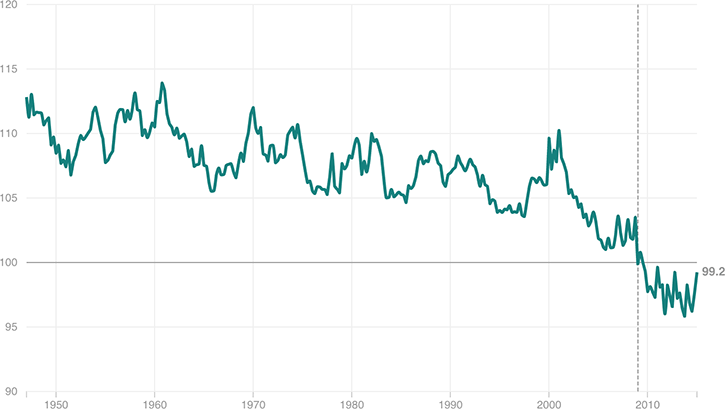

Workers’ Share of Economic Output Has Fallen Sharply
American workers’ share of the economic pie, called ‘labor share,” has fallen off steeply in recent years due to a variety of factors. In the below chart, workers’ income as a share of economic output is indexed on a scale where 2009 = 100.
